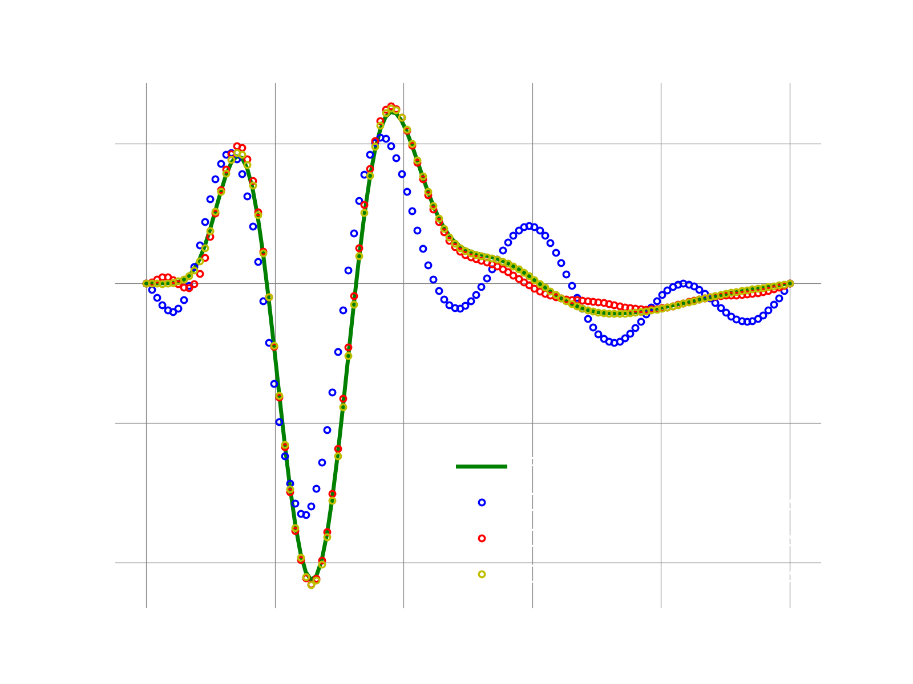

1D adv-diff: Galerkin with POD modes
Overview
We cover these three typical steps needed for a ROM:
- generate of snapshots using the full-order model (FOM)
- compute the basis: here we demonstrate the use of POD modes
- execute the ROM: here we leverage the GALERKIN ROM to demonstrate a reproductive test, i.e., we run the ROM using the same physical coefficients, b.c., etc. A predictive run is demonstrated in a different demo.
FOM Equations
The governing equations for this problem are:
where , the field is , the advection velocity is fixed at , the spatial coordinate is and the domain is . We use homogeneous BC. Note that a class approximating the FOM operators via finite-differences is implemented here.
Main function
The main function of the demo is the following:
logger.initialize(logger.logto.terminal) logger.setVerbosity([logger.loglevel.info]) # create fom object fomObj = AdvDiff1d(nGrid=120, adv_coef=2.0) # the final time to integrate to finalTime = .05 #--- 1. FOM ---# fomTimeStepSize = 1e-5 fomNumberOfSteps = int(finalTime/fomTimeStepSize) sampleEvery = 200 [fomFinalState, snapshots] = doFom(fomObj, fomTimeStepSize, fomNumberOfSteps, sampleEvery) #--- 2. POD ---# modes = computePodModes(snapshots) #--- 3. GALERKIN ROM ---# romTimeStepSize = 3e-4 romNumberOfSteps = int(finalTime/romTimeStepSize) # run with various number of modes romSizes = [2,4,6] approximations = {} for romSize in romSizes: currentSolution = runGalerkin(fomObj, romTimeStepSize, romNumberOfSteps, modes[:,:romSize]) approximations[romSize] = currentSolution # compute l2-error between fom and approximate state fomNorm = linalg.norm(fomFinalState) err = linalg.norm(fomFinalState-currentSolution) print("With {} modes, final relative l2 error: {}".format(romSize, err/fomNorm))
1. Run FOM and collect snapshots
def doFom(fom, dt, nsteps, saveFreq): u = fom.u0.copy() U = [u] f = fom.createVelocity() for i in range(1,nsteps+1): # query rhs of discretized system fom.velocity(u, i*dt, f) # simple Euler forward u = u + dt*f if i % saveFreq == 0: U.append(u) Usolns = np.array(U) return [u, Usolns.T]
2. Compute POD modes
print("SVD on matrix: ", snapshots.shape) U,S,VT = np.linalg.svd(snapshots) return U
3. Construct and run ROM
def runGalerkin(fomObj, dt, nsteps, modes): # auxiliary class to use in the solve below # to monitor the rom state during time stepping class RomStateObserver: def __call__(self, timeStep, time, state): pass # find out number of modes wanted romSize = modes.shape[1] # create a linear decoder, passing only the desired number of modes # this will make a deep copy of the modes linearDecoder = rom.Decoder(modes) # fom reference state: here it is zero fomReferenceState = np.zeros(fomObj.nGrid) # create ROM state by projecting the fom initial condition fomInitialState = fomObj.u0.copy() romState = np.dot(modes.T, fomInitialState) # create problem scheme = ode.stepscheme.ForwardEuler problem = rom.galerkin.DefaultExplicitProblem(scheme, fomObj, linearDecoder, romState, fomReferenceState) # create object to monitor the romState at every iteration myObs = RomStateObserver() # solve problem ode.advance_n_steps_and_observe(problem, romState, 0., dt, nsteps, myObs) # after we are done, use the reconstructor object to reconstruct the fom state # get the reconstructor object: this allows to map romState to fomState fomRecon = problem.fomStateReconstructor() return fomRecon(romState)
Results
If everything works fine, the following plot shows the result. We see that for this toy example, the full solution is recovered very well with Galerkin with just a few POD modes.
